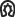
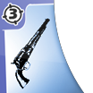

Mustang
Lorsque vous mettez un cheval Mustang en jeu, la distance à laquelle les autres vous "voient" augmente de 1 : il leur faudra donc une arme de plus longue portée pour vous atteindre. Quant à vous, vous voyez toujours les autres joueurs à leur distance normale !

Planque
Quand vous mettez cette carte en jeu, elle vous permet de "dégainer" quand vous êtes la cible d'un

: cela fonctionne automatiquement en mode Facile, sinon prenez une carte du dessus de la pioche. Si vous tirez une carte avec le symbole

, vous vous en tirez avec un [

]. Sinon, continuez normalement. La carte PLANQUE vous offre une chance supplémentaire avant même de regarder votre main ! (Jouez cette carte devant vous.)

Prison
Jouez cette carte pour jeter n'importe quel joueur (à l'exception du Shérif) en prison.
Si vous êtes en prison, vous devez "dégainer" avant que votre tour ne commence : si vous tirez une carte portant un , vous vous évadez de prison et poursuivez votre tour normalement. Dans le cas contraire, vous passez votre tour.

Dynamite
Jouez cette carte devant vous : la Dynamite reste en place pendant un tour de table entier. Lors de votre prochain tour (la Dynamite étant déjà en jeu), vous devez "dégainer" : si vous piochez un

, la Dynamite explose (vous perdez 3 points de vie) ; dans le cas contraire, la Dynamite passe au joueur suivant.

Lunette
Lorsque la Lunette est en jeu, la distance à laquelle vous "voyez" les autres diminue de 1. Ceci affecte toutes les cartes liées à la distance, y compris vos armes. Les joueurs, eux, vous voient toujours à la même distance !

Schofield
Cette arme étend votre portée de tir à 2.
Vous ne pouvez utiliser qu'une arme à la fois : l'utilisation d'une nouvelle arme annule la précédente.

Remington
Cette arme étend votre portée de tir à 3. Vous ne pouvez utiliser qu'une arme à la fois : quand vous jouez une nouvelle arme, défaussez l'ancienne.

Carabine
Cette arme étend votre portée de tir à 4. Vous ne pouvez utiliser qu'une arme à la fois : quand vous jouez une nouvelle arme, défaussez l'ancienne.

Winchester
Cette arme étend votre portée de tir à 5. Vous ne pouvez utiliser qu'une arme à la fois : quand vous jouez une nouvelle arme, défaussez l'ancienne.

Volcanic
Avec cette carte en jeu, vous pouvez jouer autant de cartes BANG! que vous voulez pendant votre tour. Ces cartes BANG! peuvent viser une ou plusieurs cibles, mais leur portée de tir est limitée à 1.

Repaire (DODGE CITY)
Même effet que la carte MUSTANG, mais vous pouvez avoir les deux !

Jumelles (DODGE CITY)
Même effet que la carte LUNETTE, mais vous pouvez avoir les deux !